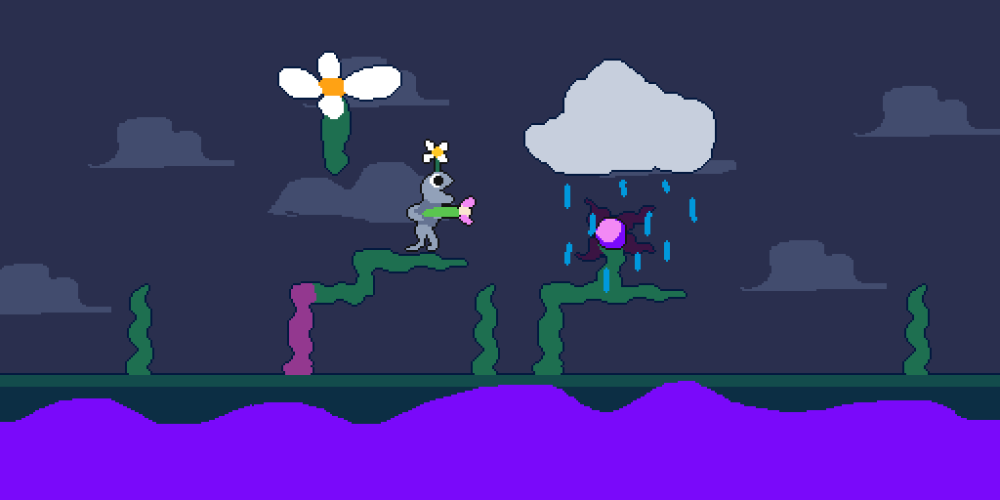
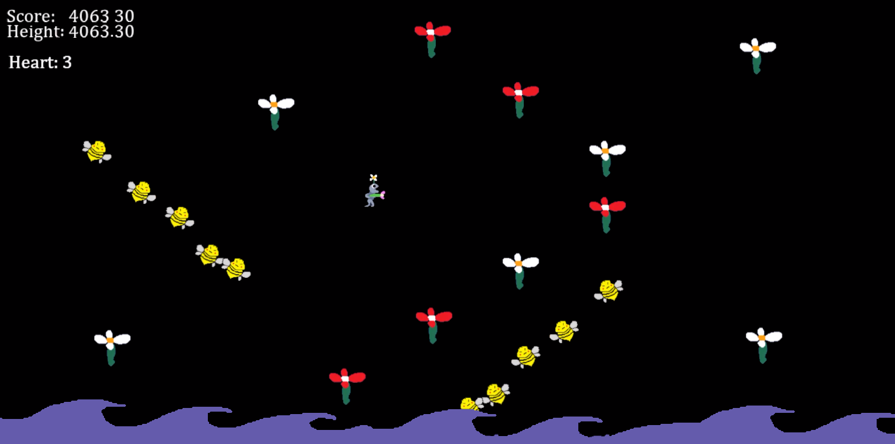

Published:
5 days ago
Status:
Released
Platforms:
Html, PC
Author
Aiko (Programmer),
JamminCogh (Artist)
- The game "Bouncebuds" - an entry submitted to the Piratejam 14 gamejam in January of 2024.
- The game was created in GM2 and ported to Javascript to run as a HTML5 game on itch.io. The game is also deployable as an executable for Windows.
- The objective was to quickly design, implement, and polish a game within a short timespan. The primary requirement of the game was that it include a satisfying game-loop, without any bugs.
- The game features multiple instances, and switches between them, having one for primary gameplay, and another for the game over screen, which returns via keypress.
- The input for the game uses keybinds and can be played on keyboard with the 'A' and 'D' keys, with 'R' to restart.
- The gameplay consists of manouvring the player left and right to bounce on flowers to ascend higher, and reach a high score (determined by the maximum height reached).
- To prevent the scale of the game increasing indefinitely, all entities asides from the player are moved vertically based on player physics, instead of the player moving in game-space, and offscreen entities are removed.
- The game features scaling difficulty on a logorithmic curve so that the game gradually increases difficulty but never becomes impossible.
- The submission received multiple positive reviews, with suggestions to add more functionality to the "bee" enemy.
Genre: Platformer
Tools Used: Gamemaker